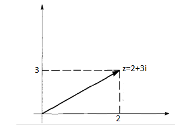
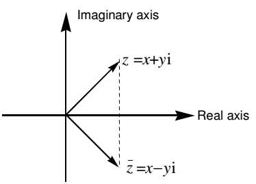
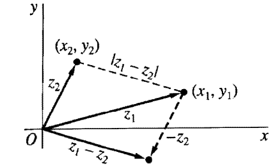
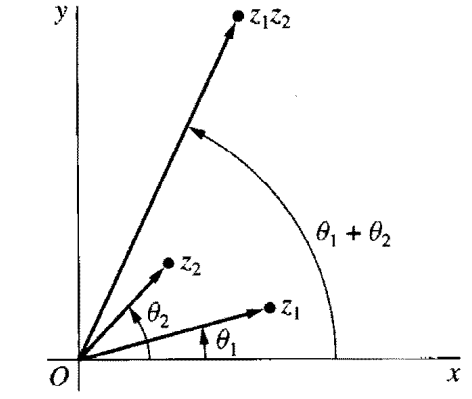

Section 2.2 The set of complex numbers
The positive integers (natural numbers) were invented to count things. The negative integers were introduced to count money when we owed more than we had. The rational numbers were invented for measuring quantities. Since quantities like voltage, length and time can be measured using fractions, they can be measured using the rational numbers.
The real numbers were invented for wholly mathematical reasons: it was found that there were lengths such as the diagonal of the unit square which, in principle, couldn’t be measured by the rational numbers, instead they can be measured using real numbers.
The complex numbers were invented for purely mathematical reasons, just like the real numbers and were intended to make things neat and tidy in solving equations. They were regarded with deep suspicion by the more conservative folk for a century. Complex numbers are points in the plane, together with a rule telling you how to multiply them. They are two-dimensional, whereas the real numbers are one dimensional.
Equations of the form \(x^{2} + 1 = 0\)has no solution on the set of real numbers. Therefore, the set of complex numbers permits us to solve such equations.
|
Definition 2.12
The set of complex numbers is denoted by ℂ and is described by ℂ\(= \left\{ \ \frac{z}{z} = x + \text{iy},\ x,\ y \in \Re\ \text{and}\ i^{2} = - 1\ \right\}\text{.}\)
|
Note: If x = 0, the number is called purely imaginary and if y = 0, the number is called purely real.
Complex numbers can be defined as an order pair (x, y) of real numbers that can be interpreted as points in the complex plane (z- plane) with coordinates x and y.
Example 2.43: \(\ \text{Find}\ \text{the}\ \text{real}\ \land \ \text{imaginary}\ \text{part}\ \text{of}\ \text{the}\ \text{following}\ \text{complex}\ \text{numbers}:\)
Subsection 2.2.1 Plotting complex numbers

Example 2.44: Draw the complex number z = 2+3i
Solution:

Equality of Complex numbers
Example 2.45 \(\ \text{If}\ z_{1} = 2 + \text{ix}\ \text{and}\ z_{2} = y + 6i\ \text{are}\ \text{equal}\ ,\ \text{then}\ \text{find}\ \text{the}\ \text{value}\ \text{of}\ x\ \land \ y\text{.}\ \)
Subsection 2.2.2 Operations on Complex numbers
Example 2.46\(\ \text{If}\ z_{1} = 2 + 3i\ \text{and}\ z_{2} = 4 + i,\ \text{then}\ \text{find}\ a)\ z_{1} + z_{2}\ b)\ z_{1} - z_{2}\ c)\ z_{1}\text{.}\ z_{2}\ d)\ \frac{z_{1}}{z_{2}}\)
Subsection 2.2.3 Conjugate of a complex number
| Definition 2.13 |
|---|
| The conjugate of a complex number z = x+iy is denoted by \(\ \overline{z}\) and is defined as \(\ \overline{z}\) = x-iy. It can be represented by the point (x, -y) which is the reflection of the point (x, y) about the x-axis. |

Example 2.47: Find the conjugate of the complex number z = 2+9i.
Properties of Conjugate
The others are left for the reader.
Subsection 2.2.4 Modulus (Norm) of a complex number
| Definition 2.14 |
|---|
| The modulus of a complex number z = x+iy is a non-negative real number denoted by |z| and is defined as |z| = \(\sqrt{x^{2} + y^{2}}\text{.}\) Geometrically, the number |z| represents the distnce between the point (x, y) and the origin. |

Example 2.48: Find the modulus of the complex number z = 3 – 4i.
Properties of modulus
The others are left for the reader.
Subsection 2.2.5 Additive and multiplicative inverses
Let z = x+iy be a complex number, then
Example 2.49: Find the additive and the multiplicative inverse of z = 3+4i.
| Exercise 2.3 |
|
Subsection 2.2.6 Argument (Amplitude) of a complex number
| Definition 2.15 |
|---|
|
Argument of a complex number z = x+iy is the angle formed by the complex number z = x+iy with the positive x-axis. The argument of a complex number z = x+iy is deonted by argz and is given by arg(z) = \(\text{tan}^{- 1}(yx)\text{.}\)
The particular argument of z that lies in the range \(- \pi < \theta \leq \pi\) is called the principal argument of z and is dented by Argz.
|
Example 2.50: Find the principal argument of the following complex numbers:
Properties of Arguments
Example 2.51: Find the principal argument of \(\ a)\ (1 + i)\ ( - 1 - i)\ b)\ (\frac{- 2 + 2i}{1 - i})\)
Subsection 2.2.7 Polar form of a complex number
| Definition 2.16 |
|---|
| Let r and \(\theta\)be polar coordinates of the point (x, y) of the complex number z = x+iy. Since x = \(r\text{cos}\theta\)and y = \(r\text{sin}\theta\text{,}\) then the complex number can be written as : \(\underline{\underline{\ z = r(\text{cos}\theta + i\text{sin}\theta)}}\) which is called polar form, where r is modulus of z and \(\ \theta\ \)is principal argument of z. |
Example 2.52: Express the following complex numbers in polar form:
\(\begin{matrix}
a)\ z = 1 + i\ \\
\ \text{solution}:\ r = \sqrt{2}\ \text{and}\ \theta = \text{tan}^{- 1}(1) = \pi 4\text{.}\ \text{Thus},\ z = \sqrt{2}(\text{cos}\pi 4 + i\text{sin}\pi 4)\text{.} \\
\end{matrix}\)
\(\begin{matrix}
b)\ z = 3 - 3i\ \\
\text{solution}:\ r = \sqrt{\text{18}}\ \text{and}\ \theta = \text{tan}^{- 1}( - 1) = - \pi 4\text{.}\ \\
\text{Thus},\ z = \sqrt{\text{18}}(\text{cos} - \pi 4 + i\text{sin} - \pi 4) = \sqrt{\text{18}}(\text{cos}\pi 4 - i\text{sin}\pi 4)\text{.} \\
\end{matrix}\)
| Multiplication and division in polar forms |
Proof:
Example 2.53: \(\ \text{If}\ z_{1} = 6\ (\text{cos}\pi 2\ + i\text{sin}\pi 2)\ \text{and}\ z_{2} = 2\ (\text{cos}\pi 3\ + i\text{sin}\pi 3),\ \text{then}\ \text{find}\ \)
\(\) \(\ a)\ z\ _{1}\text{.}\ z_{2}\ b)\ \frac{z_{1}}{z_{2}}\)
- Argument of a product
| The argument of the product of two complex numbers is the sum of their arguments. |

Proof:
\(\) Argument of a quotient
| The argument of the quotient of two complex numbers is the difference of their arguments. |
Proof:
Example 2.54: \(\text{arg}(\frac{- 4}{1 + \sqrt{3}\ i}) = \text{arg}( - 4) - \text{arg}(\ 1 + \sqrt{3}\ i) = \pi - \pi 3 = \ 2\pi 3\)
| De Moivre’s Formula |
Example 2.55: Express\(\ (2 + 2i)^{\text{100}}\) in polar form.
Example 2.56: Express\((\sqrt{3} + i)^{\text{60}}\ \) in polar form.
|
Euler’s formula
The complex number \(z = r(\text{cos}\theta + i\text{sin}\theta)\) can be written in exponential form as: \(z = \text{re}^{\text{iθ}}\) which is called Euler’s formula.
|
Example 2.57: Express the complex number z = 1+i using Euler’s formula.
\(\begin{matrix}
\text{Solution}:\ z = 1 + i \\
\text{Now}\ r = \sqrt{2}\ \land \ \theta = \pi 4\ \Rightarrow \ z = \text{re}^{\text{iθ}} = \underline{\underline{\sqrt{2}e^{\pi\ i4}}} \\
\end{matrix}\)
Example 2.58: Express the complex number \(z = 1 + \sqrt{3}\ i\ \) using Euler’s formula.
Example 2.59: Express the complex number \(z = (\sqrt{3}\ + i\ )^{7}\) using Euler’s formula.
Subsection 2.2.8 Extraction of roots
Example 2.60: Find the square roots of the complex number \(\ z = 1 + \sqrt{3}i\text{.}\)
Example 2.61: Find the cube roots of the complex number \(\ z = 8\ i\text{.}\)
| Exercise 2.4 |
|
1. Find the argument of the following complex numbers:
2. Show that \(a)\ |e^{\text{iθ}}| = 1\ b)\ \overline{e^{\text{iθ}}\ } = e^{- \text{iθ}}\ \)
3. Using mathematical induction, show that \(e^{\text{iθ}_{1}}\text{.}\ e^{\text{iθ}_{2}}\text{.}\ \cdots\text{.}\ e^{\text{iθ}_{n}} = e^{i(\theta_{1} + \theta_{n} + \cdots + \theta_{n})}\ ,\ n = 2,\ 3,\ \cdots\)
4. Show that \(a)\ \text{cos}3\theta = \text{cos}^{3}\theta - 3\text{cos}\theta\text{sin}^{2}\theta\ b)\ \text{sin}3\theta = 3\text{cos}^{2}\theta\text{sin}\theta - \text{sin}^{3}\theta\ \)
5. Show that \(1 + z + z^{2} + \cdots + z^{n} = \frac{1 - z^{n + 1}}{1 - z},\ \text{for}\ z \neq 1\text{.}\)
6. Find the square roots of z = 9i
7. Find the cube roots of z = \(-\) 8i
8. Solve the following equations:
\(a)\ z^{32} = 8i\ \) \(b)\ z^{2} + 4i = 0\ \) \(c)\ z^{2} - 4i = 0\ \)
|